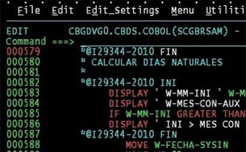

Lenguaje de Máquina / Pseudocódigo / Lenguajes de Nivel ligeramente superior
Las computadoras sólo pueden manejar instrucciones binarias sin formato, llamado Lenguaje de Máquina, la descripción informal de un programa se llama Pseudocódigo, luego cuando el programa se realizaba todo en papel se expandía diligentemente, y traducía a código de máquina, por un lado usando cosas como tablas de códigos operativos, una vez completada la traducción, el programa se ingresaba a la computadora y se ejecutaba, como el proceso canso a la gente, en la década de 1940 a 1950 los programadores estaban desarrollando lenguajes de nivel ligeramente superior, los códigos de operación dieron nombres simples, llamados Mnemónicos, seguidos de operaciones, para formar instrucciones, entonces en lugar de escribir instruciones de unos y ceros, los programadores pueden escribir algo como LOAD_A 14 por supuesto la CPU no tiene idea de que es esto, solo entiende binario, asi los codificadores idearon crear utilidades reutilizables en binario, que se leen de instrucciones basadas en texto, ensamblado en las correspondientes instrucciones binarias automáticamente este programa se llama Compilador.
Compilador

El Compilador lee un programa en lenguaje ensamblador y lo convierte al código original de la máquina, con el tiempo los compiladores adquirieron nuevas funciones que facilitaron la programación, una ventaja es saber que el título salta automáticamente, esto ayuda a los programadores a centrar más su atención en la programación y abandonar los procesos mecánicos.
Un nuevo nivel de abstracción incluso con las características del compilador al vincular el salto a los encabezados en lenguaje ensamblador, los idiomas siguen siendo delgados en el código del dispositivo en general cada instrucción del lenguaje ensamblador se convierte directamente a la máquina correspondiente,instrucciones, mapeo uno a uno, por lo que esta inherentemente vinculado a dispositivos básicos,el compilador aun obliga a los programadores a pensar en registros, memoria y sitios a usar, si de repente se necesita un valor adicional, es posible que se tenga que cambiar una gran cantidad de código para que se ajuste. El programador crea abstracciones para las ubicaciones de memoria deseadas llamadas Variables.
Lenguajes de Nivel
Fortran fue lanzado por ABB en 1957, llegó a controlar la programación informática temprana, el cual es un sistema de programación para hacer software de escritura más fácil. Fueron 20 veces más cortos que el equivalente escrito a mano código de ensamblaje, luego el intérprete de Fortran lo tradujó y expandió al código de máquina original, IBM estaba en el campo de la venta de computadoras, asi que al princio el código Fortran, se pudo ensamblar y ejecutar solo en las computadoras IBM, por lo que en la decada de 1950 solo podian funcionar en un solo tipo de máquina, asi en 1959 el Comité de Sistema de Datos e Idiomas, consejos de Grace Hopper, desarrolló un lenguaje de programación común que pueda usarse en diferentes máquinas, el resultado fue un lenguaje de alto nivel, facil de usar orientado al negocio común llamado Cobol. Cada computador requería un traductor Cobol, pero críticamente estos compiladores pueden aceptar el mismo código fuente Cobol, independientemente. Este concepto se llama escribir una vez ejecutar en cualquier lugar, el mayor impacto fue reducir la barrera informática de entrada, antes de tener lenguajes de programación de alto nivel era un mundo para expertos en informática..
Esto no termino en 1959 de hecho la edad de oro comenzó a programar el lenguaje del diseño, el salto y la evolución, en 1960 idiomas como Algol, Lisp y Basic. En 1970 Pascal, C y Smalltalk, 1980 C++, Objetive-C y Perl. En 1990 Rubí, Serpiente y Java, el nuevo milenio ha visto el surgimiento de: Swift, C#.
Anterior